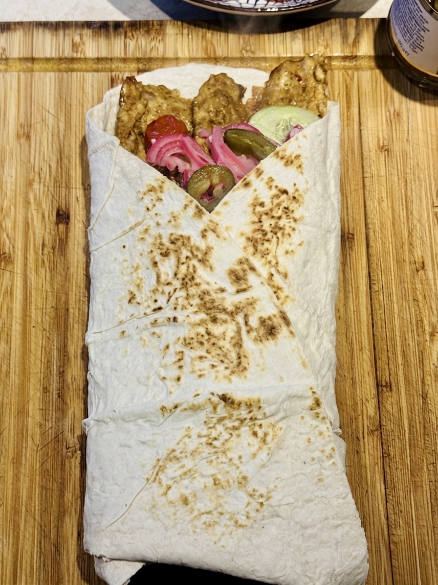
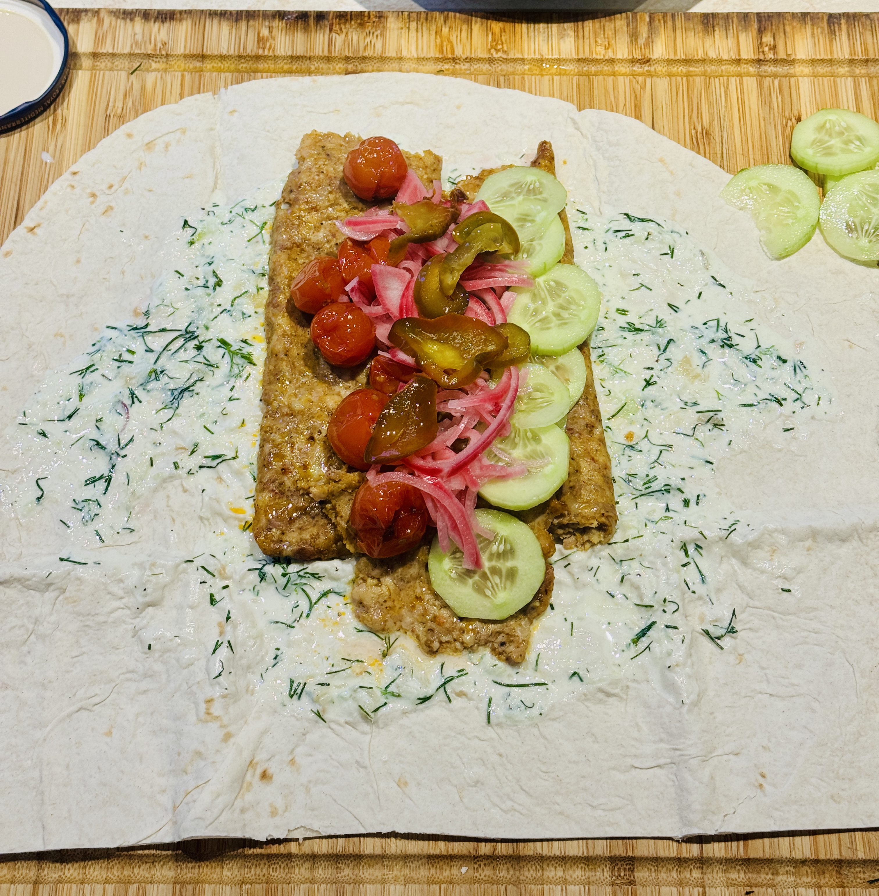

Chicken Tzatziki Lavash
Ingredients
Chicken & Base
- 1 kg ground chicken
- Oak'a Citrus Margarita spice mix
- Oak'a Delicious Chicken spice mix
- Chili powder
- Lavash bread
- Olive oil
Tzatziki Sauce
- Greek yogurt
- Cucumber
- Fresh dill
- Olive oil
- Roasted garlic (from the pan)
- Salt & black pepper
Toppings & Extras
- Cherry tomatoes
- Head of garlic
- Fresh cucumber
- Sweet and spicy jalapeños
- Parchment paper
Pickled Red Onions
- 1-2 red onions
- 200ml white vinegar
- 200ml water
- 2 tbsp honey
Instructions
1. Pickled Onion (Prepare First)
- Slice red onions thinly (use a mandolin if you have it) and pack them tightly into a jar or container.
- In a small pot, combine water, white vinegar, and honey. Bring to a simmer.
- Once simmering, turn off the heat and let it cool for one minute.
- Pour the warm mixture over the onions. Let sit at room temperature for 15 minutes, then move to the fridge.
2. Chicken & Roasting
- Preheat your oven to 200°C.
- Season the ground chicken with Oak'a Citrus Margarita, Delicious Chicken spice mixes and chili powder.
- Place a sheet of parchment paper down, put the chicken on it, cover with another piece of paper, and roll it out until evenly thin.
- Roll the thin chicken sheet up tightly.
- Place the wrapped chicken roll onto a baking pan. Add the cherry tomatoes and the whole head of garlic (with the top chopped off to expose the cloves).
- Pour olive oil over the tomatoes and garlic, and season everything with salt.
- Bake in the oven for 40-45 minutes. While it cooks, prepare your fresh toppings.
- Once done, remove from the oven and let the chicken cool.
3. Tzatziki & Assembly
- While the chicken is cooling, prepare the sauce: squeeze out and smash the roasted garlic cloves.
- In a bowl, mix Greek yogurt, grated cucumber, smashed roasted garlic, finely chopped dill, a splash of olive oil, salt, and pepper.
- Slice or shred the cooled chicken roll.
- Lay out your lavash bread, spread a generous amount of tzatziki, and layer the chicken, roasted tomatoes, pickled onions, fresh cucumber, and jalapeños.
- Roll the lavash tightly. Sear it in a hot pan for a minute on each side to seal it and get it warm and crispy.